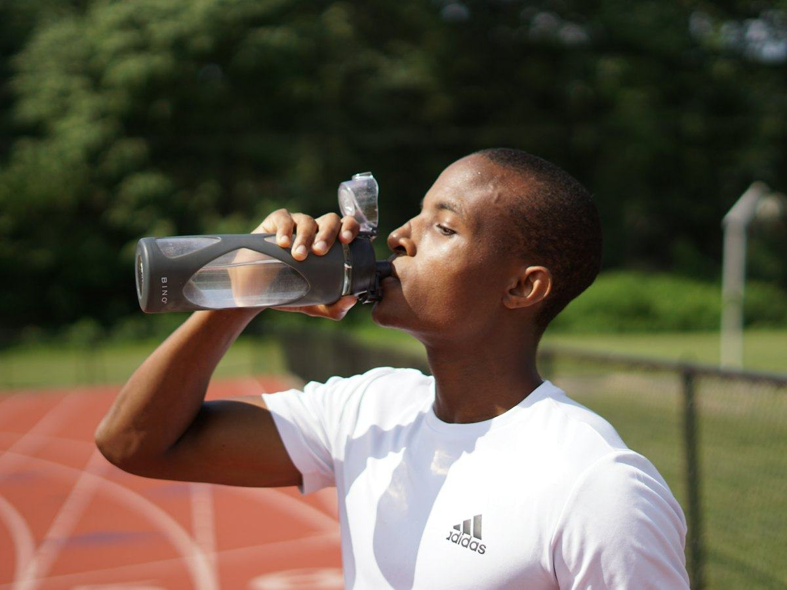

Hidratación
¿Cuánta agua hay que beber al día? Lo que dice la EFSA
Cuánta agua necesitas al día según la Autoridad Europea de Seguridad Alimentaria (EFSA), cuánta viene de la comida y cómo saber si bebes suficiente.
 Por el equipo editorial de Pombo AI
Por el equipo editorial de Pombo AI
12 nov 2026 · 7 min de lectura

Beber poco al hacer ejercicio perjudica el rendimiento y la salud, pero beber de más también tiene riesgos. Estas son las pautas del American College of Sports Medicine (ACSM) explicadas en claro.
Sudar es la forma que tiene el cuerpo de enfriarse. Si no repones lo que pierdes, aparece deshidratación. El objetivo del ACSM al beber durante el ejercicio es evitar una deshidratación excesiva y cambios excesivos en el equilibrio de electrolitos. El umbral que se intenta no superar es una pérdida de peso corporal por déficit de agua mayor del 2 %.
Para una persona de 70 kg, un 2 % son 1,4 kg de peso perdido durante la sesión.
El ACSM no recomienda guiarse solo por la sed. Propone programas individualizados, calculados pesándote antes y después del ejercicio para estimar tu tasa de sudoración. Como punto de partida para maratonistas bien hidratados, el consenso sugiere beber a voluntad entre 0,4 y 0,8 litros por hora, ajustando según el tamaño corporal, la velocidad y el clima.
En sesiones de menos de una hora a intensidad moderada, normalmente basta con beber agua a sorbos cuando lo necesites.
Para recuperarte rápido y por completo tras una deshidratación importante, el ACSM sugiere beber en torno a 1,5 litros por cada kilo de peso perdido. Pesarte antes y después te da la cifra exacta.
Estos efectos son consecuencia conocida de la deshidratación, que es lo que el ACSM busca evitar manteniendo la pérdida por debajo del 2 % del peso.
La hiponatremia asociada al ejercicio puede causar síntomas graves o incluso la muerte. El consenso señala como causa principal consumir más líquido del que se pierde por sudor. Los grupos con mayor riesgo mencionados son las mujeres, las personas mayores y quienes son de menor tamaño, corren despacio, sudan poco y beben mucho. También quienes pierden mucho sodio con el sudor.
Regla práctica: no bebas "por obligación" mucho más de lo que sudas. Si terminas pesando más que al empezar, has bebido de más.
El ACSM sugiere beber despacio unos 5 a 7 mL por kilo de peso corporal al menos 4 horas antes del ejercicio. Si no orinas o la orina es muy oscura, añadir 3 a 5 mL/kg unas 2 horas antes.
Sí. Beber más de lo que sudas puede causar hiponatremia asociada al ejercicio, una bajada de sodio en sangre que puede ser grave.
Para una recuperación rápida tras una deshidratación importante, el ACSM sugiere beber alrededor de 1,5 litros por cada kilo de peso perdido.
Aviso: Este artículo es informativo y no sustituye el consejo de un médico o dietista-nutricionista. Si tienes una enfermedad, tomas medicación, estás embarazada o has tenido un trastorno de la conducta alimentaria, consulta con un profesional antes de cambiar tu alimentación.
Cuánta agua necesitas al día según la Autoridad Europea de Seguridad Alimentaria (EFSA), cuánta viene de la comida y cómo saber si bebes suficiente.
Cuándo basta con agua y cuándo tiene sentido una bebida deportiva con sodio e hidratos: qué dicen los estudios sobre el ejercicio de más de una hora.
Cómo entrenar con calor sin riesgos: recomendaciones del Ministerio de Sanidad, síntomas del golpe de calor y qué hacer ante calambres o mareos.